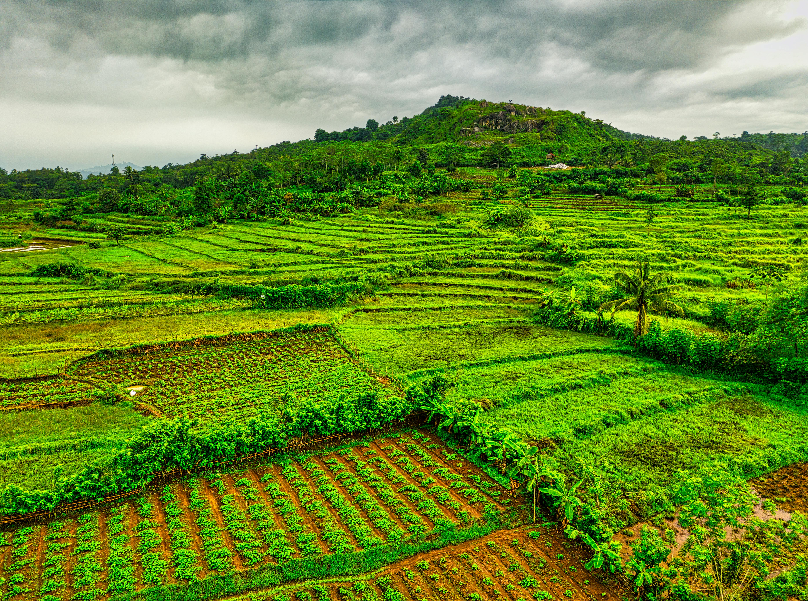

We train young professionals to attain impactful careers by addressing Africa's agri-food system challenges and improving livelihoods for wider communities.
Your investment builds Africa's next generation of leaders — professionals who understand systems, drive collaboration, and bridge generations to deliver lasting impact.
Our intensive fellowship equips young professionals with skills in data analysis, policy research, and implementation — building Africa's next generation of decision-makers.
Fellows work across borders on shared challenges — creating a pan-African network of professionals who think beyond national boundaries.
We connect emerging professionals with experienced leaders, ensuring institutional knowledge transfers and mentoring networks endure.
Our fellows learn to see interconnections across land governance, agriculture, and environment — approaching challenges holistically, not in silos.

Our flagship 12-month fellowship places talented young Africans in public sector institutions across the continent. Fellows work on real projects in land governance, agriculture policy, and environmental management — gaining hands-on experience that transforms careers.
Each cohort is supported with rigorous training in data analysis, GIS, policy research, and professional development. The result: a growing network of capable, connected leaders driving change from within Africa's institutions.
Fund the FellowshipThree pillars define where your funding goes — and why GanzAfrica delivers impact traditional programmes cannot.
We embed fellows directly in government institutions — not NGOs or private companies. This builds state capacity from within, creating lasting institutional change where it matters most.
Every fellow is trained in data literacy, GIS mapping, and evidence-based analysis. We don't just advocate for better policy — we equip people to prove what works.
Theory is only the beginning. Our fellows learn by doing — implementing real projects that deliver measurable outcomes for communities and institutions.
From supervisors to fellows — hear the impact in their own words.
I think GA has done a great job in preparing the fellows because they are the best staff we have. Sometimes we wonder how they know everything! They are very proactive, they know a lot, because they are being trained.
National Land Authority (NLA)
GanzAfrica fellows are very well prepared, they know what they are doing, they understand things, they are up to any task, they are very motivated, responsible. If you give them a task, they make sure they respond to you, they are very sharp.
Ministry of Environment
I have found immense value in my role as a Smart Water fellow at GanzAfrica… a pivotal aspect of my journey has been participating in the MINAGRI team where collaboration with fellows from diverse backgrounds was key.
Former Smart Water Management Fellow